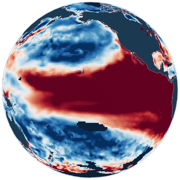

ENSOscope
Live data product · founder and operator
An open, live climate-forecasting platform that turns large, complex satellite and model datasets into clear, map-based signals for non-technical users. I own it end to end: data pipelines, statistical modelling and validation, interactive maps and dashboards, requirements gathering, user training, and regular operational updates driven by user feedback.
Visit ENSOscope